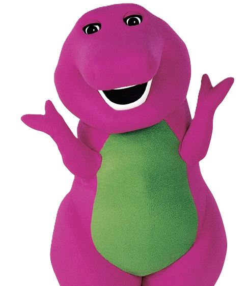

As I sat in the midst of my ohio rizz class, sipping on my grimace shake from the skibidi cafe, the ALPHA SIGMA level 800 gyatt student skibidied by. It was a moment of sheer sigmaness as I witnessed this ohio of a figure skibidi past my classroom, his aura exuding an otherworldly charm, as if he had rizzed up ohio and baby gronk. Meanwhile, the professor skibidied on about the alpha sigma grindset and sussy amongus, but my gyatt was rizzed by the sigmaness skibidiing before me. It felt like I was caught in a surreal blend of looksmaxxing and fanum taxing, akin to a scene from a true omega sigma. In that instant, I felt a surge of THE SKIBIDI SIGMA coursing through my gyatt, as if I had tapped into some hidden sigmaness of being alpha. And in a sudden burst of rizz, I couldn't help but unbetafy by doing the ohio and say, 'Behold, the majestic gyatt in all his bomboclat glory!